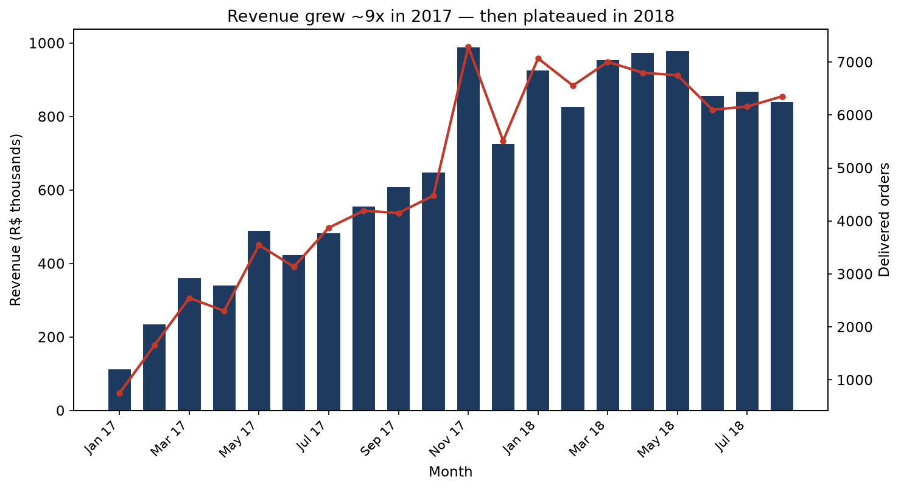
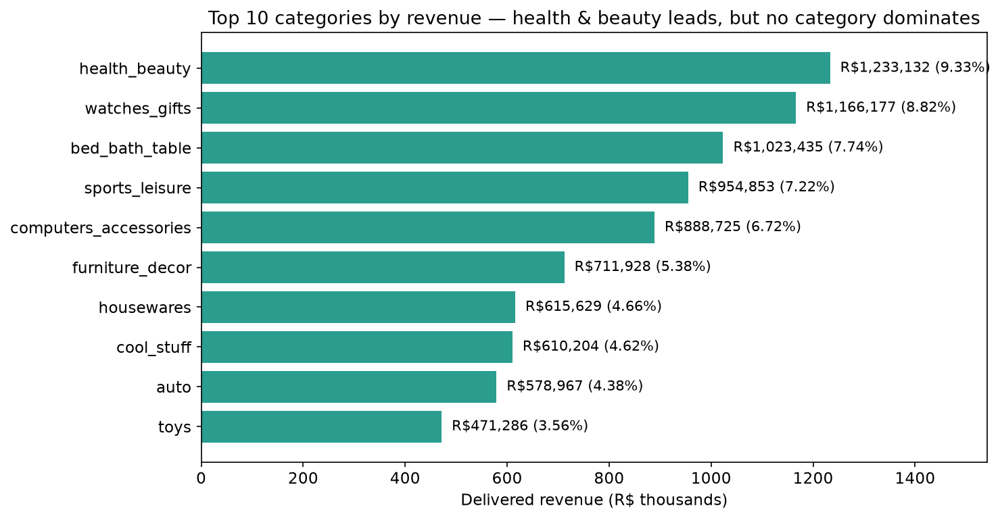
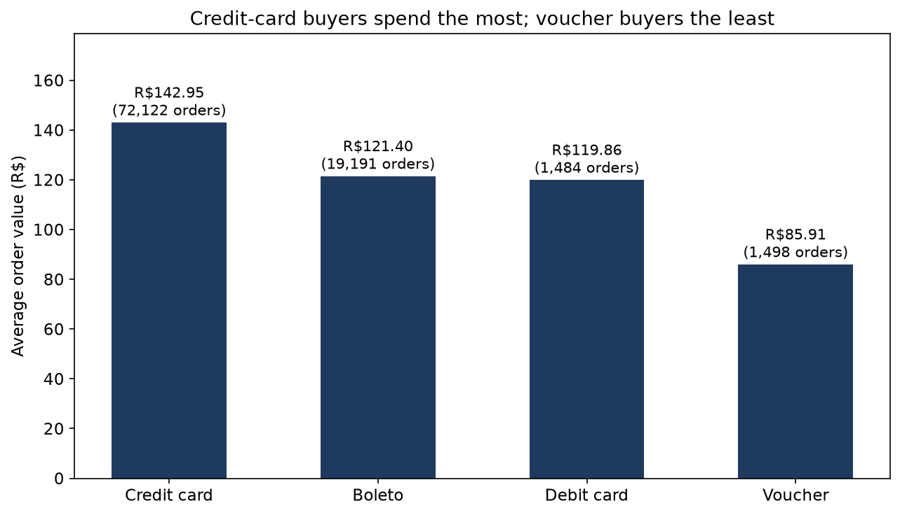
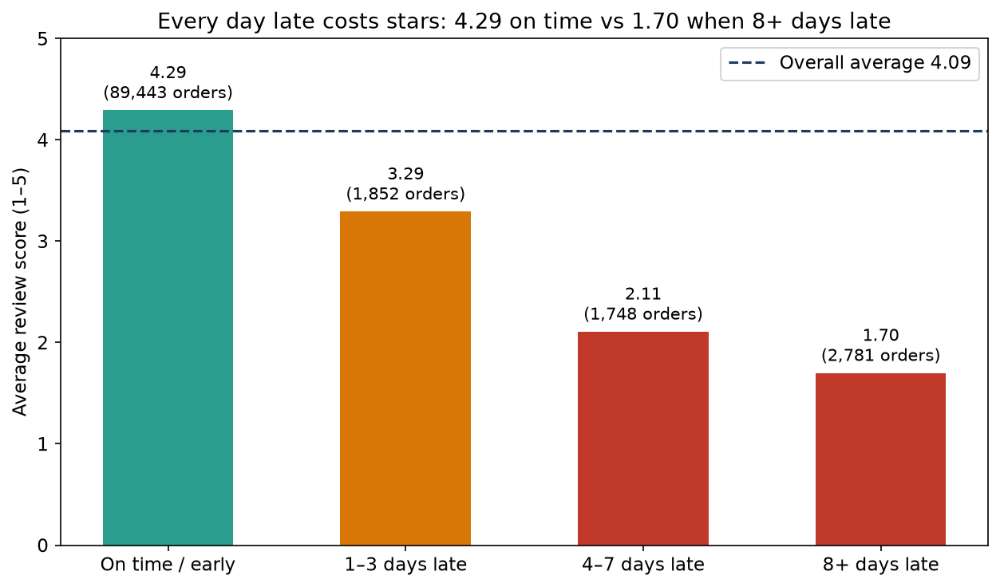
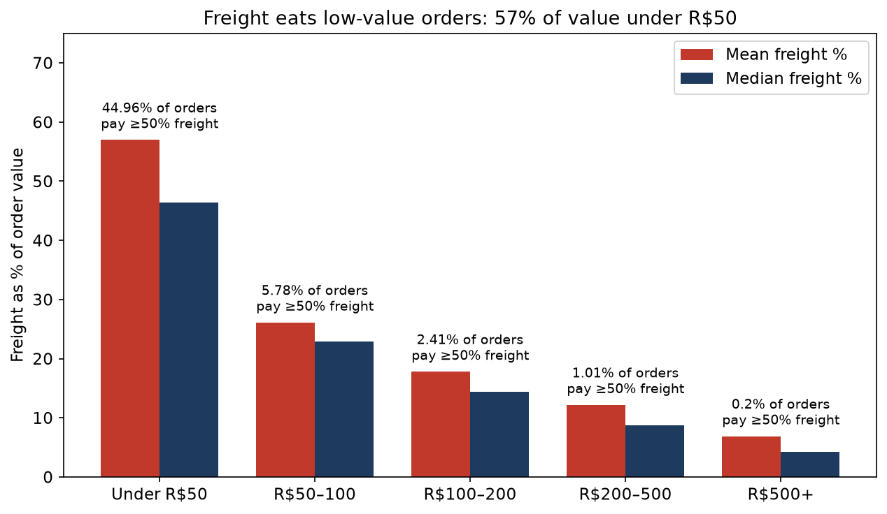

Growth was volume, not bigger baskets

Delivered orders went from 750 in Jan 2017 (R$111,798) to 7,289 in Nov 2017 (R$987,765, the Black Friday peak), then settled at 6,100–7,000 a month in 2018. AOV stayed in a R$124–152 band all the way — growth came from more buyers, not more spend per buyer. 2016 was a ramp: 267 delivered orders in the whole year, and zero in Nov 2016.
Categories are broad — no single bet

Health & beauty leads at R$1,233,132 (9.33% of revenue), then watches & gifts (8.82%) and bed, bath & table (7.74%). The top 5 categories together are 39.83% of revenue and the top 10 are 62.43%. The highest-ticket categories are musical instruments (R$301.66 per order) and small appliances (R$300.09); the lowest are electronics (R$61.60) and telephony (R$75.70).
Where demand lives — and what it costs to serve
| State | Orders | Revenue | Share | AOV | Avg freight % | Late rate |
|---|---|---|---|---|---|---|
| SP (São Paulo) | 40,501 | R$5,067,633 | 38.33% | R$125.12 | 25.14% | 4.49% |
| RJ (Rio de Janeiro) | 12,350 | R$1,759,651 | 13.31% | R$142.48 | 31.56% | 12.11% |
| MG (Minas Gerais) | 11,354 | R$1,552,482 | 11.74% | R$136.73 | 31.58% | 4.57% |
| RS (Rio Grande do Sul) | 5,345 | R$728,897 | 5.51% | R$136.37 | 33.90% | 6.08% |
| PR (Paraná) | 4,923 | R$666,064 | 5.04% | R$135.30 | 33.47% | 4.04% |
| BA (Bahia) | 3,256 | R$493,584 | 3.73% | R$151.59 | 38.55% | 12.16% |
São Paulo is 41.98% of orders and 38.33% of revenue; SP + RJ + MG are 63.38% of revenue. São Paulo city alone is 15,045 orders (R$1,859,557). Freight share and late rates both rise with distance from SP: Maranhão's late rate is 17.43% with 21.5-day average delivery, against 4.49% and 8.7 days in SP.
Payments: credit card dominates, installments track basket size

Credit card is used on 76.94% of orders (78.34% of payment value); boleto 19.90%, voucher 3.89%, debit card 1.54%. Credit-card AOV is R$142.95 vs R$121.40 for boleto and R$85.91 for voucher. Installments rise steeply with basket size: paid-in-full credit-card orders average R$82.27, 2–3 installments R$113.52, 4–6 R$156.83, 7–12 R$299.57. Installments are how buyers afford big baskets, not a discount channel.
Late delivery is the review killer

On-time orders average 4.29 stars; late orders average 2.27 — and 53.69% of late orders get 1 star, against 6.58% of on-time orders. The damage scales with the delay: 1–3 days late averages 3.29, 4–7 days 2.11, 8+ days 1.70 (79.18% score 1–2). Category barely matters for lateness (4.3–8.1% late across categories) — this is a logistics problem, not a product problem. The worst-reviewed category is office furniture (3.51), which also has the longest average delivery time (20.8 days).
Freight eats low-value orders

On orders under R$50, freight averages 56.98% of the order value (median 46.35%), and 44.96% of those orders pay freight worth half the order or more. There are 28,791 such orders — 29.8% of all delivered orders. Above R$200, freight is 12.17% or less. Total freight is R$2,198,276 — 16.63% of revenue.
Almost nobody comes back
| Buyer type | Delivered orders | Revenue | Share of revenue | AOV |
|---|---|---|---|---|
| One-off (1 order) | 90,379 | R$12,461,120 | 94.25% | R$137.88 |
| Repeat (2+ orders) | 6,099 | R$760,378 | 5.75% | R$124.67 |
96.88% of the 96,096 unique customers ordered exactly once; only 2,997 ordered twice or more. Repeat buyers contribute 5.75% of revenue — and spend less per order (R$124.67 vs R$137.88). Sellers are equally spread out: 2,970 sellers share the revenue, the top 10 take 13.27% and the top 100 take 45.52%; the median seller earned R$846.17 over the whole period. São Paulo sellers supply 64.36% of item value while SP buyers are 38.33% of revenue — the marketplace ships out of SP to the rest of Brazil.
Recommendations
- Fix delivery in the North-East first. Maranhão (17.43% late, 21.5 days), Ceará (13.76%), Bahia (12.16%) and Rio de Janeiro (12.11%) are where late delivery is destroying reviews. Cutting MA's late rate to SP's 4.49% would move ~93 of its 717 orders from late to on time — and late orders are 53.69% 1-star.
- Put a delivery promise you can keep on the product page. The review penalty starts immediately: even 1–3 days late drops the average from 4.29 to 3.29. Promising the honest date (and hitting it) is worth more than promising a fast one and missing it — 8+ days late averages 1.70 stars.
- Stop subsidising freight on sub-R$50 orders — or bundle them. 28,791 delivered orders (29.8%) are under R$50 and pay freight worth 57% of the order on average. A free-shipping threshold above R$50, bundle prompts, or a minimum order value would cut the R$2.20M freight bill where it hurts most.
- Promote health & beauty, watches & gifts and bed/bath — and high-ticket musical instruments and small appliances. The top 5 categories are 39.83% of revenue, so the catalogue is broad; the AOV spread (R$61.60 electronics to R$301.66 musical instruments) is where marketing spend should follow margin, not just volume.
- Protect the credit-card + installments funnel. 76.94% of orders are credit card and installments scale with basket size (7–12 installments average R$299.57). Any friction in card checkout or installment options hits the biggest baskets hardest.
- Treat retention as the growth lever, not acquisition. 96.88% of customers never order twice. Moving repeat share from 3.12% to even 6% at the current repeat AOV (R$124.67) would add ~R$760k of revenue at the current scale — without buying a single new customer.